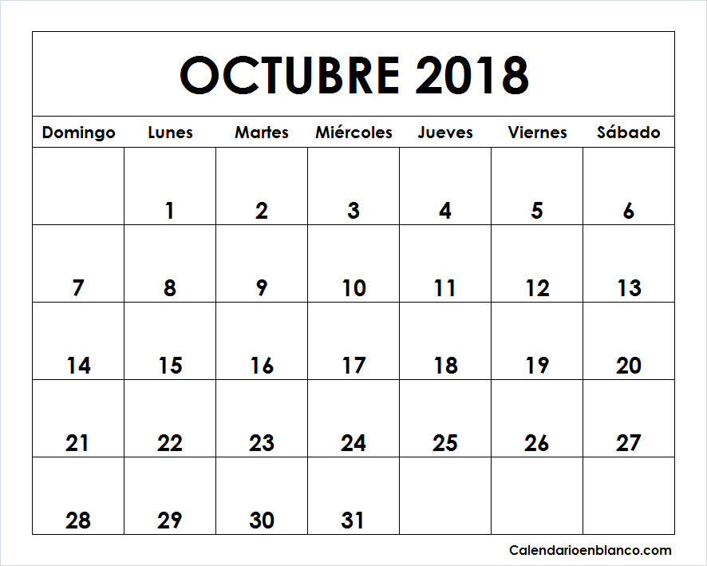

1- Crear maquetación de una página web para manejar la información de textos y videos.
2- Conocer las partes que componen las páginas web mediante propiedades expuestas en el OVI
3- Brindar información necesaria para la comprensión de los temas por medio de una plataforma entendible y organizada.
CALENDARIO

* Qué son los recuerdos sino el idioma de los sentimientos, un diccionario de caras y días que vuelven a nosotros como los verbos y adjetivos acuden al discurso.